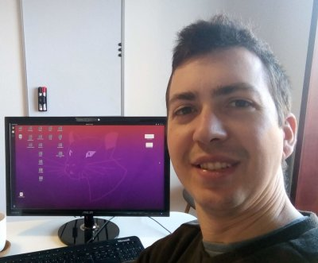

 Ricardo Cruz
 ricardo.pdm.cruz@gmail.com
ricardo.pdm.cruz@gmail.com
 rpmcruz
0000-0002-5189-6228
PDF
rpmcruz
0000-0002-5189-6228
PDF
Ricardo Cruz has worked on a wide range of machine learning topics, with particular emphasis on theoretical aspects of deep learning and computer vision – with 20+ publications and 100+ citations in such topics as: • adapting ranking models for class imbalance; • making convolutional neural networks invariant to background; • making them faster by adjusting the computational effort to each image; • losses for ordinal regression. He is a Post-doc Researcher on autonomous driving at the Faculty of Engineering, University of Porto, and he has been a researcher at INESC TEC since 2015, where his research earned him the computer science PhD in 2021. He has a BSc in computer science and a MSc in applied mathematics. He has frequently been an invited professor at the Faculty of Engineering, University of Porto, where he earned a pedagogic award.
Education
Work Experience
Collaboration between the University of Porto and Bosch Car Multimedia to improve autonomous driving perception. I developed frameworks for object detection using camera and LiDAR (2D discretization and raw point-clouds), published new methods for efficient semantic segmentation and ordinal regression, supervised six master's theses, four bachelor's projects, and other team members, responsible for the HPC infrastructure (using Slurm).
Research focus: re-thinking fundamentals about image classification and semantic segmentation (8+ publications), in particular (1) a method for background invariance using adversarial training, (2) new losses that minimize absolute trade-offs between Type 1 and 2 errors instead of relative trade-offs, (3) using backpropagation also for inference to refine existing outputs, (4) deploying learning-to-rank methods for class imbalance. During the period, I contributed to workshops, the Summer School on Computer Vision (VISUM), and other events, and was twice awarded "outstanding recognition" for organizing workshops and helping with the HPC infrastructure.
Epidemiological models for HIV: differential equations, stochastic simulations, cellular automata.
Publications
h-index:| Google Scholar | Scopus | Web of Science |
|---|---|---|
| 7 | 5 | 4 |
Sources for the following metrics: • Impact Factor (IF) as reported by the journal's webpage. • SJR rank quartiles are from Scimago and relate to the subject category closest to machine learning (not necessarily the best quartile). • CORE rank is from ICORE for whatever last year is available for that conference. • Citation counts come from Crossref. Last update: 2024-07-30